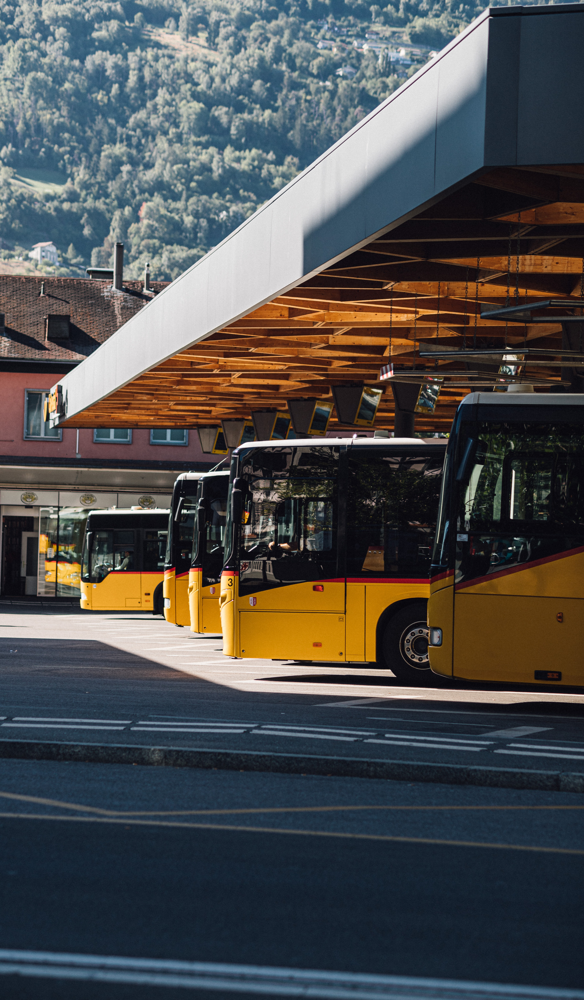

- train
- Bus
- Airplane
Bus
Passenger rail transport is the conveyance of passengers by means of wheeled vehicles specially designed to run on railways. Trains allow high capacity on short or long distance, but require track, signalling, infrastructure and stations to be built and maintained.

bus
A bus (contracted from omnibus,[1] with variants multibus, motorbus, autobus, etc.) is a public transport road vehicle designed to carry significantly more passengers than the average cars or vans. Buses can have a capacity as high as 300 passengers,[2] although the average bus usually carries between 30 to 100. The most common type is the single-deck rigid bus, with double-decker and articulated buses carrying larger loads, and midibuses and minibuses carrying smaller loads. Coaches are used for longer-distance services.